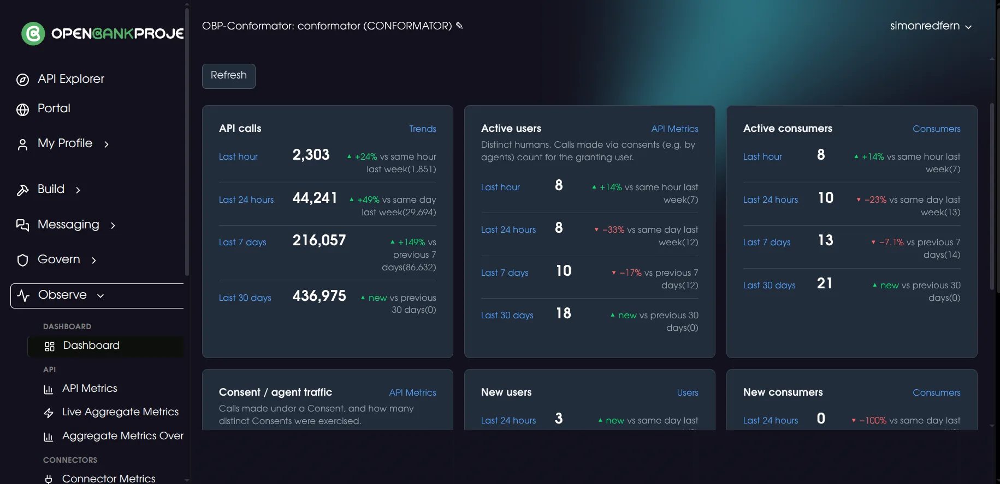
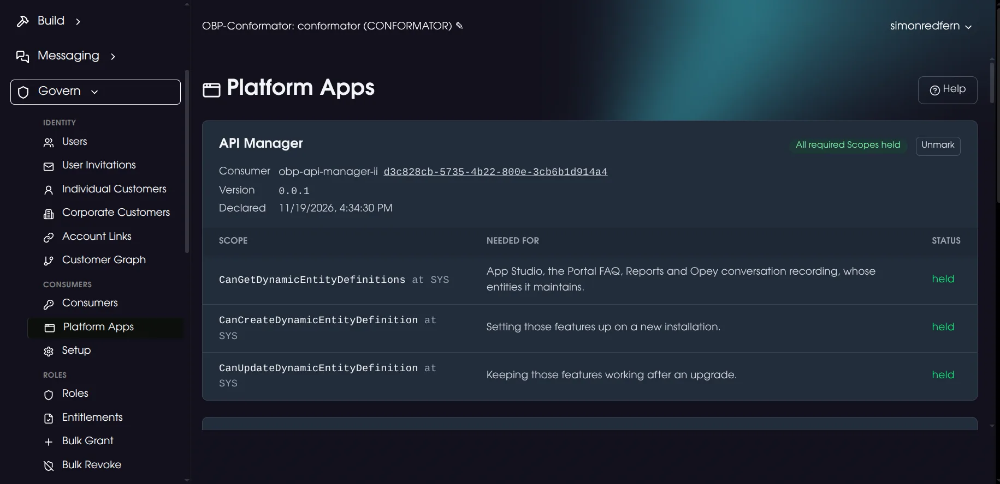

API Manager
Manage the platform from one place.
API Manager is where bank staff and operators manage users, Roles, applications and data, build new APIs without code and watch the platform live.

API Manager
API Manager is where bank staff and operators manage users, Roles, applications and data, build new APIs without code and watch the platform live.

Roles and entitlements, granted one by one or in bulk, groups, Role requests and ABAC rules. Applications, rate limits, and Platform Apps with their Scopes.
Dynamic entities and endpoints, method routing, JSON schema validation and webhooks: new APIs, live, without a release.
Live and historical metrics, connector metrics, traces and Telemetry, and a dashboard of active users and applications.
Banks, FX rates, customers (personal and corporate, with the links between them), account views, permissions and mandates.
API Products and plans, financial products and API collections. Portal pages and the FAQ, published from App Studio.
Data retention, holds and archives, settings, caches, the database pool, migrations and feature flags.
Each Platform App declares the Scopes it needs and why. Administrators see at a glance which Scopes each app holds and which it still needs.

Where developers sign up, get an API key, read the guides and make their first call.
Every endpoint documented, with the Roles it needs, and callable from the page.
Fills a sandbox with realistic banks, customers, accounts and transactions in minutes.
Planning an open banking platform, a banking-as-a-service offer or a regulatory sandbox? Tell us what you want to build, and we will show you OBP-API and its apps working with your own banks, products and standards.